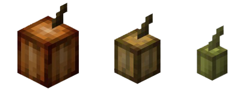

Informações sobre o Cacau
O cacau no Minecraft é um recurso útil para diversos fins. Você pode usá-lo para:
- Criar corante marrom
- Fazer biscoitos
Para encontrar cacau, você precisa procurar por árvores de cacau, que podem ser encontradas em biomas de selva. As árvores de cacau produzem vagens de cacau, que podem ser colhidas para obter sementes de cacau.
Animação do Cacau
